00:02在本期视频中，我们将了解监督学习的整体流程是怎样的。
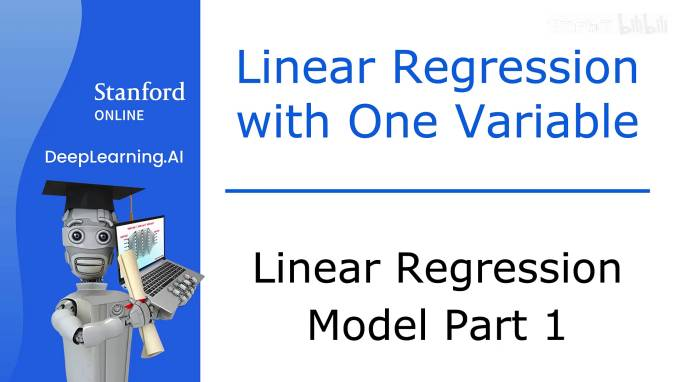
00:08具体来说，你会看到本课程的第一个模型，线性回归模型。
00:14它的意思就是给数据拟合一条直线。
00:18这可能是当今世界上应用最广泛的学习算法。
00:24随着你熟悉线性回归，你在这里看到的许多概念，也将适用于其他机器学习模型，即你后续在本专项课程中会看到的模型。
00:36我们先从一个可以用线性回归解决的问题开始。
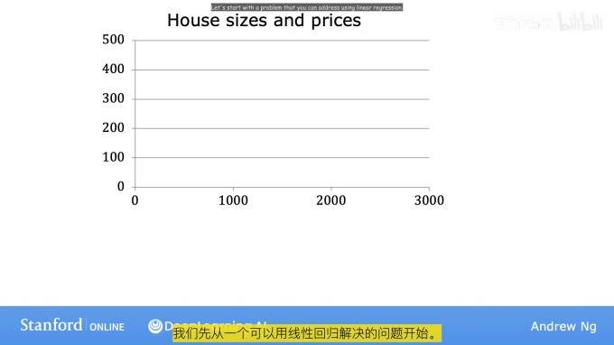
00:40假设你想根据房子的面积来预测房价。
00:44这是我们本周早些时候见过的例子。
00:48我们将使用一个来自美国波特兰市的房屋面积和价格的数据集。
00:55这里我们有一张图，横轴是房屋的面积，单位是平方英尺，纵轴是房价，单位是千美元。
01:06接下来，我们把数据集中不同房屋的数据点绘制出来。
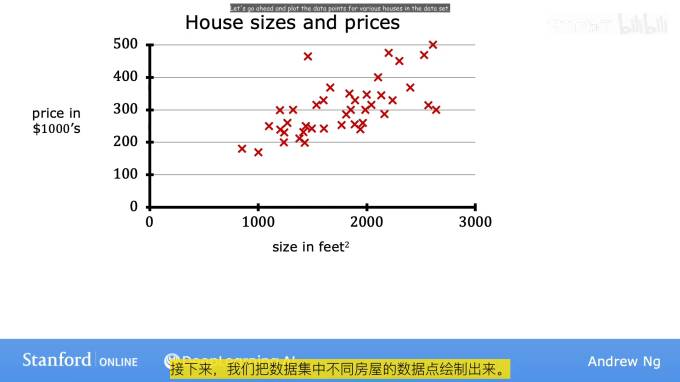
01:11这里的每个数据点，每一个小叉号都代表一套最近售出的房子，有其面积和价格。
01:21现在，假设你是波特兰的一名房地产经纪人，正帮一位客户出售她的房子。
01:26她问你，你觉得这套房子能卖多少钱？
01:31这个数据集或许能帮你估算她可能卖出的价格。
01:36你先测量了房屋的面积，发现她的房子是一千二百五十平方英尺。
01:43你觉得这套房子能卖多少钱呢？
01:46你可以做的一件事是，基于这个数据集构建一个线性回归模型。
01:52你的模型会给数据拟合一条直线，可能看起来像这样。
01:57基于这条拟合数据的直线，你大概能看出来，如果一套房子是一千二百五十平方英尺，它会与这条最佳拟合线相交于这里。
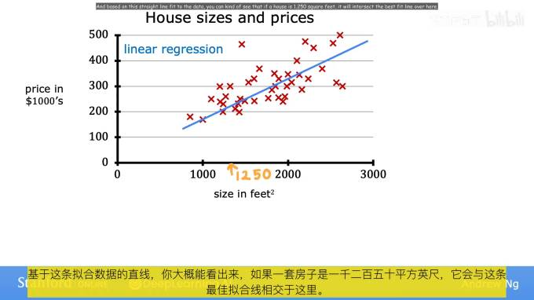
02:10如果你沿着这一点追溯到左侧的纵轴，可以看到价格大约在这个位置，比如大概是二十二万美元。
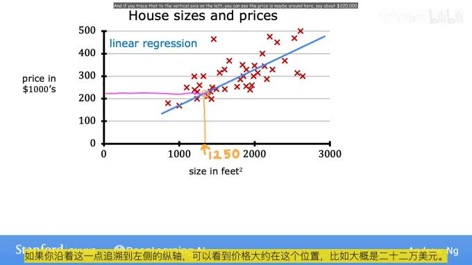
02:18这就是所谓的监督学习模型的一个例子。
02:23我们称之为监督学习，是因为你首先通过提供带有正确答案的数据来训练你的模型。
02:31因为你给模型的例子，既包含了每套房子的面积，也包含了模型应为每套房子预测的价格。
02:40在这里，价格，也就是正确答案，是为数据集中的每一套房子都给出的。
02:48这个线性回归模型是一种特定类型的监督学习模型。
02:53它被称为回归模型，因为它预测的是数字形式的输出，比如价格和美元金额。
03:03任何预测数字的监督学习模型，比如二十二万、一点五或负三十三点二，都是在解决所谓的回归问题。
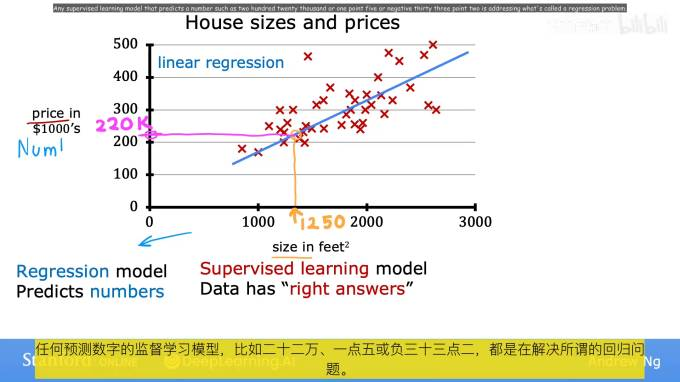
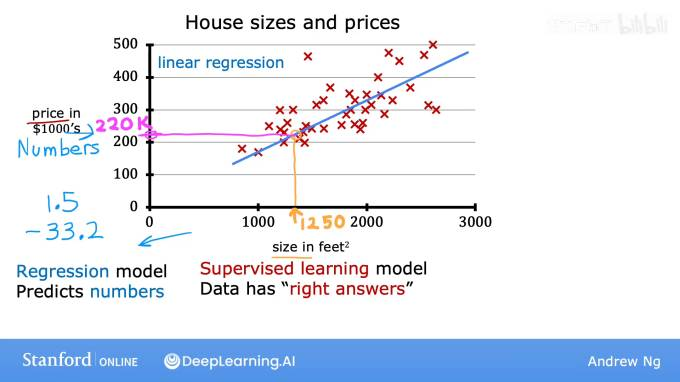
03:17所以线性回归是回归模型的一个例子，但也存在其他解决回归问题的模型。
03:26我们将在本专项课程的第二门课中看到其中一些。
03:31提醒一下，与回归模型相对应，另一种最常见的监督学习模型叫做分类模型。
03:42分类模型预测的是类别或离散类别，比如预测一张图片是猫，喵，还是狗，汪。
03:53或者，给定一份病历，模型需要预测患者是否患有特定疾病。
04:00关于分类模型，你也会在本课程后面看到更多内容。
04:06所以，回顾一下分类与回归的区别，在分类问题中，可能的输出只有少数几种。
04:14如果你的模型是在识别猫和狗，这就是两种可能的输出。
04:21或者你也许正试图识别患者身上十种可能病症中的任何一种。
04:28所以，如果可能的输出是离散、有限的集合，我们就称之为分类问题；而在回归中，模型可能输出的数字有无穷多个。
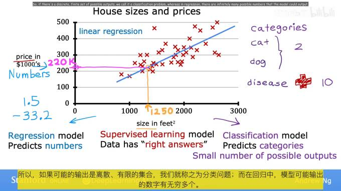
04:40除了用左侧这种图表来可视化这些数据，还有一种看待数据的方式会很有用，那就是右侧的这个数。
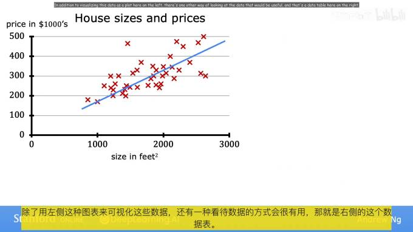
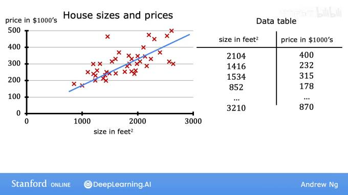
04:58这指的是房屋的面积，也就是这一列。
05:04你试图预测的价格，就是这一列。
05:10请注意，横轴和纵轴分别对应这两列，面积和价格。
05:20所以，如果这个数据表中有四十七行，那么左侧图表中就有四十七个小叉号，每个叉号对应表格中。
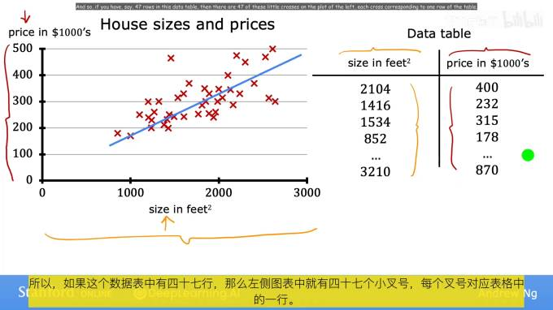
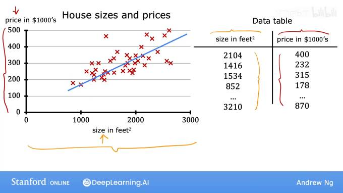
05:38例如，表格的第一行是一套面积为二千一百零四平方英尺的房子，大约在这个位置，这套房子以四十万美元的价格售出，大约在这个位置。
05:58所以，表格的第一行就绘制成了这里的这个数据点。
06:05现在，我们来看一些用于描述数据的符号。
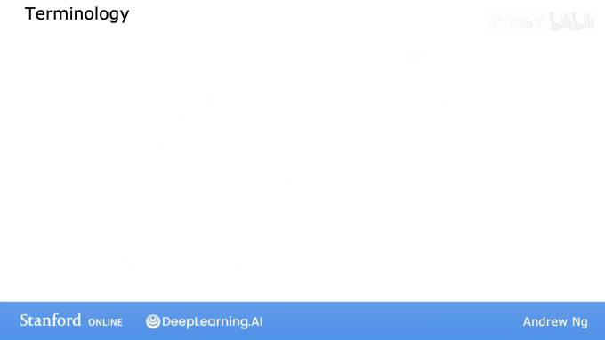
06:09这些符号在你的机器学习之旅中会很有用。
06:14随着你对机器学习术语越来越熟悉，这也将是你用来与他人讨论机器学习概念的术语，因为其中很多术语在整个 AI 领域都相当标准。
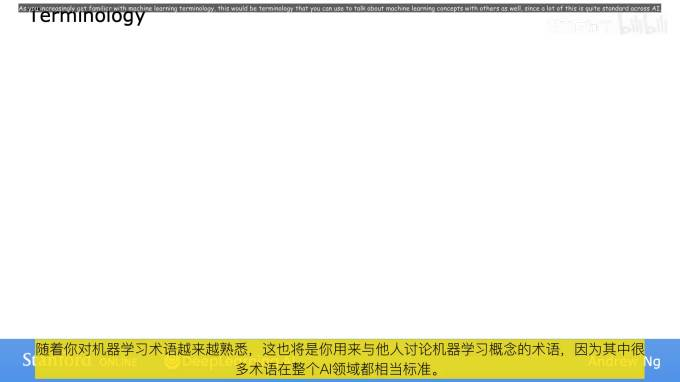
06:28在本专项课程中，你会多次看到这些符号，所以第一次记不住所有内容也没关系。
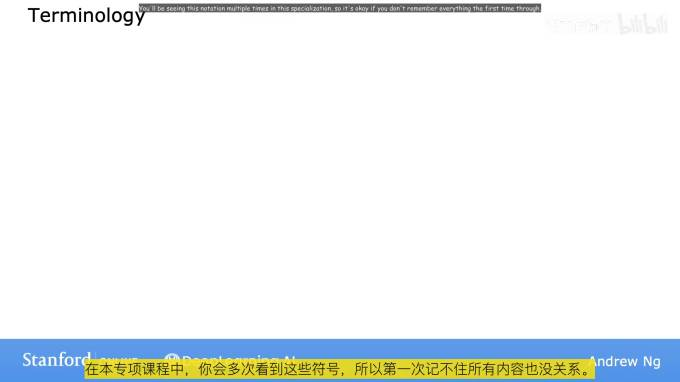
06:36它们会随着时间自然变得熟悉起来。
06:40你刚刚看到的、用来训练模型的数据集，叫做训练集。
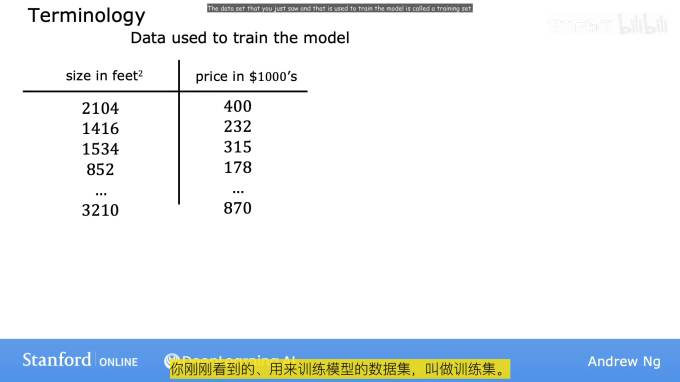
06:49请注意，你客户的那套房子不在这个数据集中，因为它尚未售出，没人知道它的价格。
06:58因此，要预测你客户的房价，你首先要用训练集来训练模型进行学习，然后该模型就能预测你客户房屋的价格了。
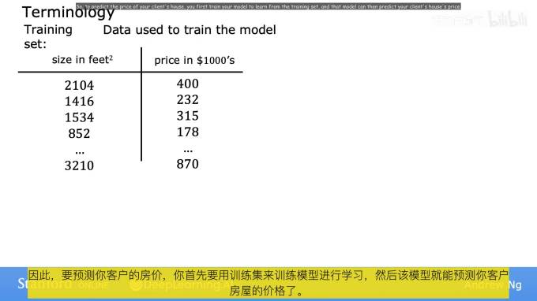
07:11在机器学习中，表示此处输入的标准符号是小写 x，我们称之为输入变量。
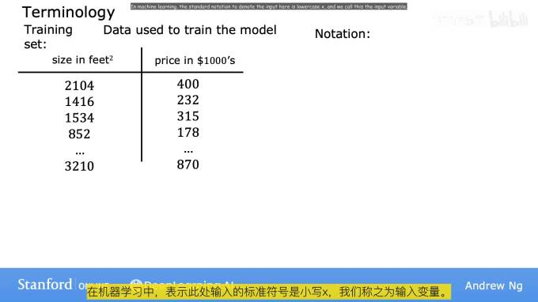
07:20它也叫做特征或输入特征。
07:27例如，对于训练集中的第一套房子，x 就是房屋的面积，所以 x 等于二千一百零四。
07:37表示输出变量的标准符号是小写 y，这个变量是你试图预测的，有时也被称为目标变量。
07:52在这里，y 就是房价，对于第一个训练样本，它等于四百。
08:05数据集里每套房子对应一行，在这个自行车训练集中，共有四十七行，每一行代表一个不同的训练。
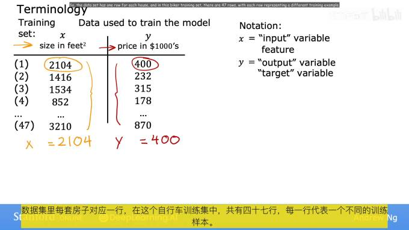
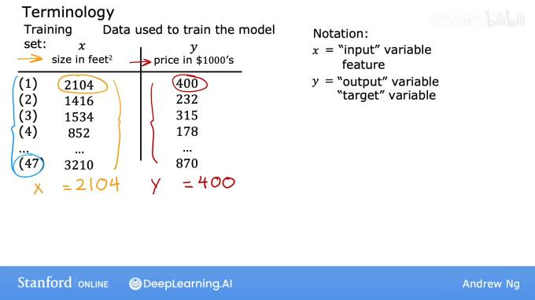
08:21我们将使用小写 m 来表示训练样本的总数，因此这里 m 等于四十七。
08:31为了表示单个训练样本，我们将使用括号 x，逗号，y 的记法。
08:40对于第一个训练样本，x，y，这对数字是二千一百零四，四百。
08:51我们有很多不同的训练样本。
08:54实际上，我们有四十七个。
08:57为了指代某个特定的训练样本，这将对应左侧表格中的特定行。
09:05我将使用 x 上标括号 i，y 上标括号 i 的记法。
09:18这是第 i 个训练样本，比如第一个、第二个、第三个，直到第四十七个训练样本。
09:27这里的 i 指代表格中的特定行。
09:34例如，这是训练集中 i 等于一时的第一个样本。
09:43所以，X 上标一等于二千一百零四，y 上标一等于四百。
10:00请注意：这个带括号的上标 i 不是求幂。
10:06所以，当我写下这个时，这并不是 x 的平方。
10:14它仅仅指代第二个训练样本。
10:17所以这个 i 只是训练集中的一个索引，指的是表格中的第 i 行。
10:24在本期视频中，你了解了训练集是什么样的，以及描述训练集的标准符号。
10:32在下期视频中，我们来看看如何把你刚看到的这个训练集，送入学习算法，以便算法能从这些数据中学。